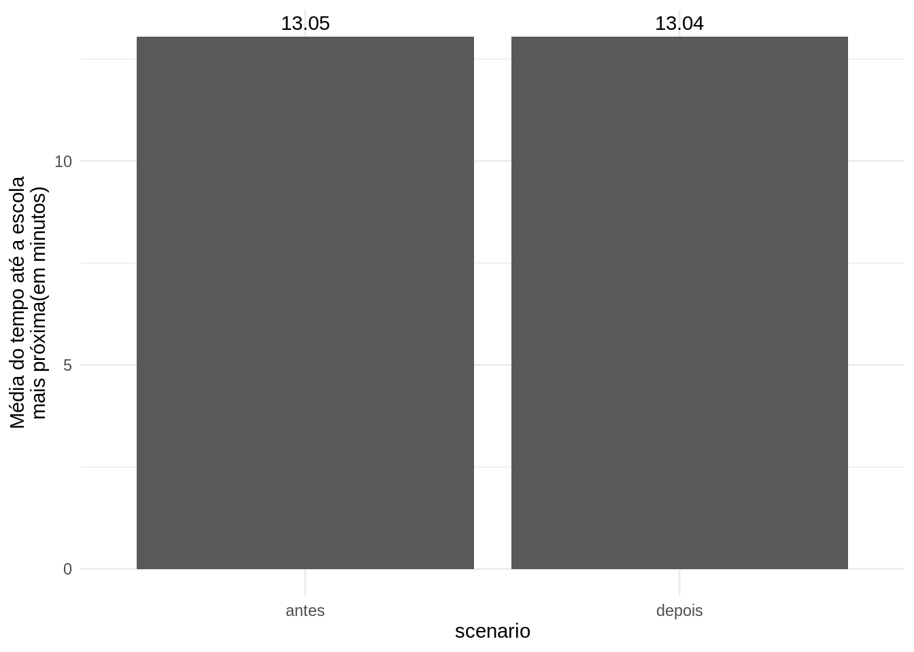
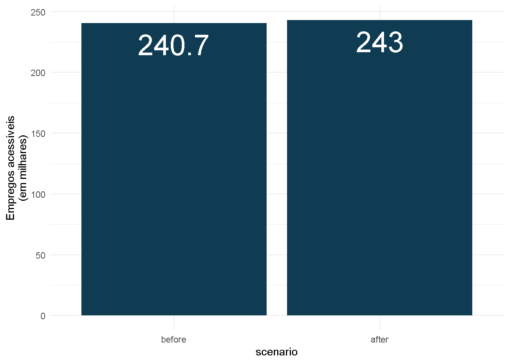
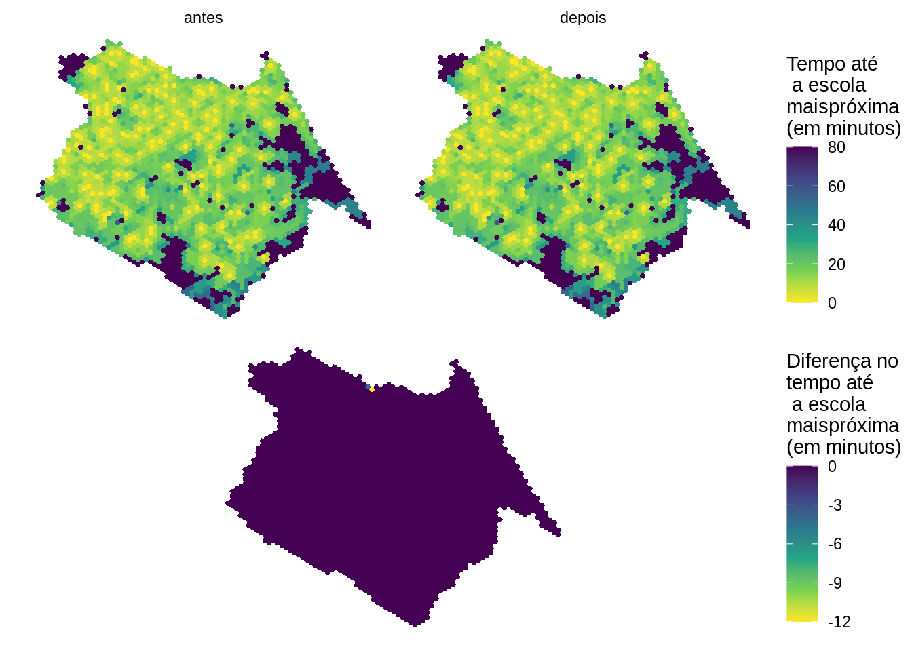
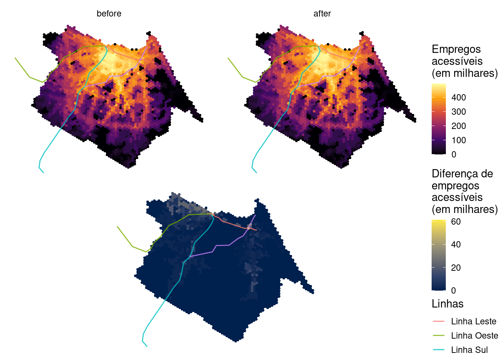
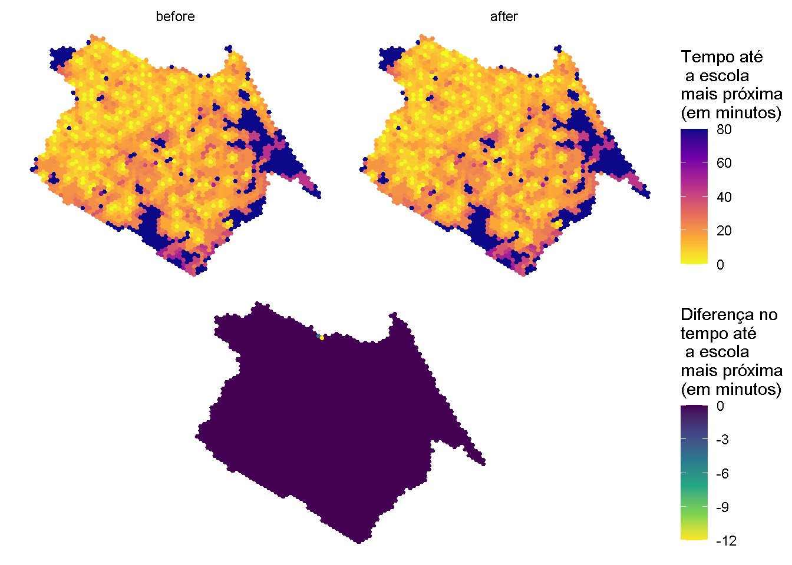
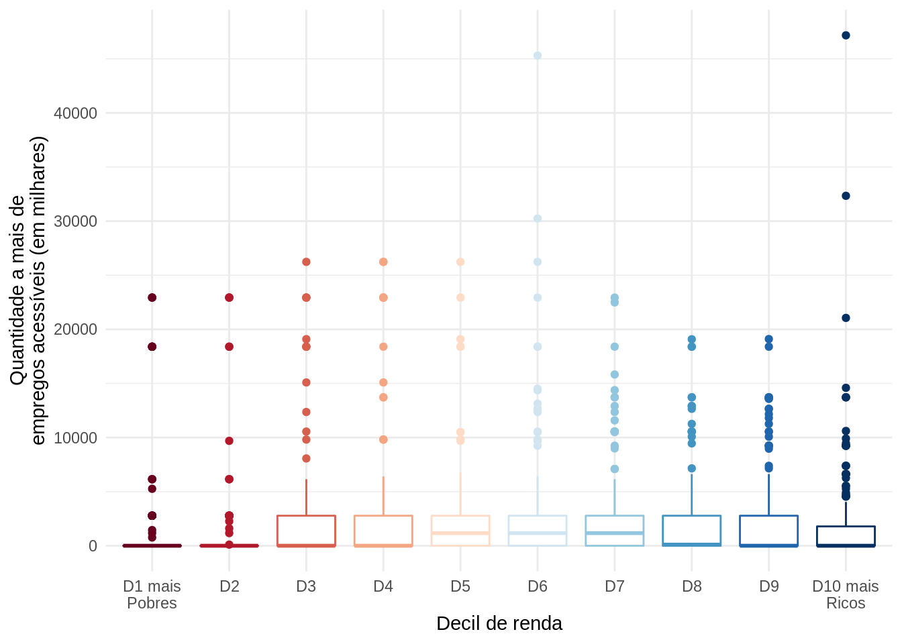
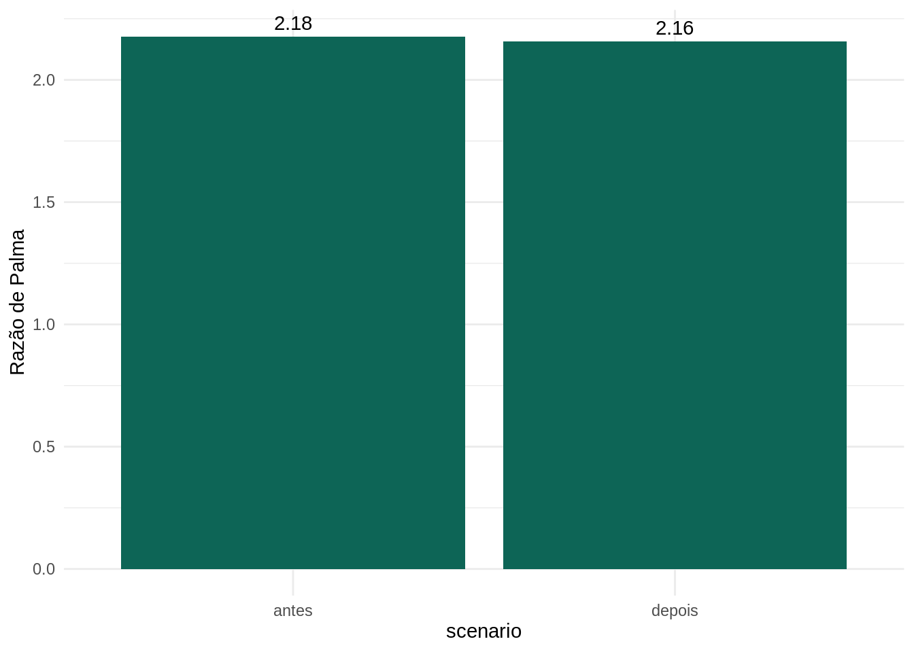

6 Comparando a acessibilidade entre dois cenários de transporte
Neste capítulo, nós vamos ilustrar como usar a metodologia ensinada nos capítulos anteriores para medir impacto de projetos de transporte sobre acessibilidade urbana. Como estudo de caso, vamos fazer uma avaliação do projeto de expansão da Linha Leste do metrô de Fortaleza (Figura 6.1). O traçado da Linha Leste possui 7.3 km de extensão e liga o Centro de Fortaleza ao bairro Papicu, permitindo a integração das linhas de metrô Sul e Oeste com corredores de Veículo Leve sobre Trilhos (VLT) e o terminal de ônibus no Papicu (Figura 6.2) No momento em que esse livro foi escrito, o metrô ainda estava em fase de construção. Portanto, estamos tratando de uma avaliação ex-ante em que avaliamos o futuro impacto que esta expansão de infraestrutura deverá ter sobre a acessibilidade urbana da cidade.
Fonte: Braga et al. (2022)

Fonte: Braga et al. (2022)
É importante notar que, na prática, a implementação deste investimento também deverá envolver mudanças nas frequências das linhas de metrô Sul e Oeste, além do racionamento do sistema de ônibus municipais, conforme o Plano de Acessibilidade Sustentável de Fortaleza (Pasfor)1. Essas mudanças adicionais no sistema de transporte público não foram incorporadas aos nossos cenários. Portanto, o estudo de caso que apresentamos aqui considera um cenário simplificado que considera apenas a implementação da Linha Leste. Para uma avaliação mais completa do impacto de acessibilidade da implementação da Linha Leste e das mudanças previstas no Pasfor, por favor veja Braga et al. (2022).
Para a avaliação de impacto da Linha Leste do metrô, nós precisaremos comparar os níveis de acessibilidade antes e depois da implementação do novo corredor. Precisamos, portanto, utilizar diferentes arquivos GTFS para representar os cenários antes e depois, e seguir os seguintes passos: 1. Calcular duas matrizes de tempo de viagem, uma antes e outra depois do investimento 2. Calcular dois cenários de acessibilidade, um antes e outro depois do investimento 3. Comparar esses as condições de acessibilidade nos cenários antes e depois, examinando como os impactos de acessibilidade se distribuem espacialmente e entre populações de diferentes níveis socioeconômicos.
Neste capítulo, vamos cobrir este passo-a-passo em detalhes, começando primeiro pelo detalhamento dos dados de transporte público em formato GTFS que vamos usar.
6.1 Dados de GTFS usados na análise
Nesta análise, usaremos os arquivos GTFS disponibilizados pela Empresa de Transporte Urbano de Fortaleza (Etufor) e a Empresa do Metrô de Fortaleza (Metrofor). Esses dados descrevem o sistema de transporte público operante na cidade de Fortaleza em outubro de 2019. Como esses são arquivos grandes, somando quase 20 MB no total, eles não estão disponíveis dentro dos pacotes r5r e gtfstools, como nos exemplos que usamos até aqui no livro. Para baixar esses dados, nós usamos o código abaixo, que faz o download dos feeds de GTFS para arquivos temporários usando a função o pacote httr:
library(httr)
# criar o endereço de arquivos temporários na máquina local
metrofor_path <- tempfile("metrofor", fileext = ".zip")
etufor_path <- tempfile("etufor", fileext = ".zip")
# download dados da metrofor
httr::GET(
"https://github.com/ipeaGIT/intro_access_book/releases/download/data_1st_edition/gtfs_for_metrofor_2021-01.zip",
httr::write_disk(metrofor_path)
)# download dados da etufor
httr::GET(
"https://github.com/ipeaGIT/intro_access_book/releases/download/data_1st_edition/gtfs_for_etufor_2019-10.zip",
httr::write_disk(etufor_path)
)Para simularmos a operação da nova Linha Leste do metrô, precisamos também de um feed que descreva como deverá ser a operação deste corredor quando ele entrar em operação. Este feed deve conter algumas informações-chave, como por exemplo o traçado da futura linha de metrô, a localização de suas estações, a velocidade operacional do metrô e a frequência planejada dos serviços. No exemplo que vamos apresentar neste livro, nós vamos utilizar o GTFS do projeto da Linha Leste que foi criado anteriormente pelo Ipea para um estudo mais detalhado de avaliação do impacto de acessibilidade deste projeto (Braga et al. 2022). Assim como os feeds da ETUFOR e da METROFOR, este arquivo GTFS está disponível para download no repositório do livro no GitHub, e pode ser baixado com o código:
# criar o endereço do arquivo temporário
linha_leste_path <- tempfile("linha_leste", fileext = ".zip")
# download do GTFS da Linha Leste
httr::GET(
"https://github.com/ipeaGIT/intro_access_book/releases/download/data_1st_edition/gtfs_linha_leste.zip",
httr::write_disk(linha_leste_path)
)Esses três arquivos GTFS serão usados em conjunto para calcular as condições de acessibilidade de Fortaleza em 2019 (antes da implementação do projeto do metrô) e para o cenário futuro quando a Linha Leste estiver funcionando. Para a análise de 2019, nós vamos calcular as matrizes de tempo de viagem com base apenas nos feeds da METROFOR e da ETUFOR de outubro de 2019, que representam a típica operação de transporte público da cidade antes da implementação do novo corredor. No cenário pós-implementação, incluiremos também o GTFS da Linha Leste, incorporando à análise a operação planejada desta linha após sua finalização.
6.2 Cálculo das matrizes de tempo de viagem
Tendo definido quais dados de GTFS vamos usar em cada um dos cenários analisados do transporte público, o próximo passo é calcular as matrizes de tempo de viagem, que posteriormente serão utilizadas para estimar os níveis de acessibilidade. Para isso, nós vamos utilizar a função travel_time_matrix() do pacote r5r, como apresentado anteriormente na Section 3.1.
Antes de calcular as matrizes de fato, nós precisamos organizar os nossos arquivos na estrutura que o r5r requer. Com o código abaixo, nós vamos criar uma pasta separada para cada um dos nossos cenários (antes e depois), e vamos salvar nessas pastas os arquivos de dados necessários para o roteamento. Primeiro, vamos criar uma pasta raíz chamada analysis_dir:
# cria pasta raíz da análise de dados
analysis_dir <- "impact_analysis"
dir.create(analysis_dir)Dentro desta pasta raiz, vamos criar agora as pastas de roteamento dos cenários antes e depois (dir_before e dir_after), contendo seus respectivos feeds:
# criando pasta dos cenários
dir_before <- file.path(analysis_dir, "before")
dir_after <- file.path(analysis_dir, "after")
dir.create(dir_before)
dir.create(dir_after)
# copiando os arquivos de GTFS para as pastas dos cenários antes e depois
file.copy(from = metrofor_path, to = file.path(dir_before, "metrofor.zip"))
file.copy(from = metrofor_path, to = file.path(dir_after, "metrofor.zip"))
file.copy(from = etufor_path, to = file.path(dir_before, "etufor.zip"))
file.copy(from = etufor_path, to = file.path(dir_after, "etufor.zip"))
file.copy(from = linha_leste_path, to = file.path(dir_after, "linha_leste.zip"))
# visualizando esquema de arquivos na pasta
fs::dir_tree(analysis_dir)impact_analysis
├── after
│ ├── etufor.zip
│ ├── linha_leste.zip
│ └── metrofor.zip
└── before
├── etufor.zip
└── metrofor.zipPara estimarmos o tempo de viagem na nossa área de estudo, nós precisamos também de um arquivo com os dados do OpenStreetMap representando a rede viária local em formato .pbf. E opcionalmente iremos utilizar também um arquivo representando a topografia local, em formato .tif. Esses arquivos, assim como os GTFS, estão disponíveis para download no repositório do livro. Partindo do pressuposto que a implementação da Linha Leste não afetaria o traçado das ruas e calçadas na região, bem como a topografia local, podemos usar os mesmos arquivos nas duas matrizes de tempo de viagem. No bloco de código seguinte, nós baixamos esses dados e copiamos esses arquivos para as pastas dos dois cenários de transporte.
# cria endereço temporário dos arquivos na máquina local
pbf_path <- tempfile("street_network", fileext = ".osm.pbf")
tif_path <- tempfile("topography", fileext = ".tif")
# download dos dados de OSM
httr::GET(
"https://github.com/ipeaGIT/intro_access_book/releases/download/data_1st_edition/for_2020.osm.pbf",
httr::write_disk(pbf_path)
)# download dos dados de topografia
httr::GET(
"https://github.com/ipeaGIT/intro_access_book/releases/download/data_1st_edition/topografia3_for.tif",
httr::write_disk(tif_path)
)# copia arquivo para as pastas dos cenários antes e depois
file.copy(from = pbf_path, to = file.path(dir_before, "street_network.osm.pbf"))
file.copy(from = pbf_path, to = file.path(dir_after, "street_network.osm.pbf"))
file.copy(from = tif_path, to = file.path(dir_before, "topography.tif"))
file.copy(from = tif_path, to = file.path(dir_after, "topography.tif"))# visualizando esquema de arquivos na pasta
fs::dir_tree(analysis_dir)impact_analysis
├── after
│ ├── etufor.zip
│ ├── linha_leste.zip
│ ├── metrofor.zip
│ ├── street_network.osm.pbf
│ └── topography.tif
└── before
├── etufor.zip
├── metrofor.zip
├── street_network.osm.pbf
└── topography.tifAgora com os dados organizados nas pastas, podemos começar o cálculo das matrizes de tempo de viagem. A primeira etapa é construir a rede de transporte multimodal usada pelo r5r no roteamento, o que é feito com o comando setup_r5(). Essa rede de transporte multimodal é criada por esta função que combina os dados da malha de ruas, do sistema de transporte público e de topografia. Essa função também retorna uma conexão com o R5 que aqui nós chamamos de r5r_core_. No exemplo abaixo, nós vamos criar duas redes, uma para cada cenário:
# aloca memória disponível para Java
options(java.parameters = "-Xmx2G")
# carrega biblioteca
library(r5r)
# cria rede de transporte multimodal de cada cenário
r5r_core_before <- setup_r5(dir_before, use_elevation = FALSE, verbose = FALSE)
r5r_core_after <- setup_r5(dir_after, use_elevation = FALSE, verbose = FALSE)Com as redes de transporte criadas para cada cenário, prosseguimos agora para o cálculo das matrizes de tempo de viagem. Nesta etapa nós vamos utilizar como origens e destinos os centróides de uma grade espacial de hexágonos de Fortaleza disponibilizada pelo pacote aopdata (mais detalhes sobre o pacote são apresentados na Seção 5). Na grade espacial utilizada, cada hexágono tem uma área de aproximadamente 0.10 Km2, o que permite uma análise espacial bem detalhada.
Para comparar os dois cenários, nós vamos calcular quanto tempo uma pessoa demoraria para viajar partindo de cada origem para todos os destinos considerando os mesmos parâmetros de viagem. Aqui, nós vamos considerar viagens a pé ou por transporte público, considerar que as pessoas iriam caminhar no máximo até 800 metros nas pernas de acesso e egresso das paradas de transporte público, e limitar o tempo máximo de viagem em até 60 minutos. Vamos considerar o horário de partida de 07:00 em uma típica segunda-feira de operação:
# carrega bibliotecas
library(data.table)
library(aopdata)
library(sf)
# leitura dos dados da grade espacial
for_grid <- read_grid(city = "Fortaleza", showProgress = FALSE)
# geração dos centroids das células espaciais
points <- st_centroid(for_grid)
# renomeia o nome da coluna com id das células
names(points)[1] <- 'id'
# calcula matriz de tempo de viagem do cenário 'antes'
ttm_before <- travel_time_matrix(
r5r_core_before,
origins = points,
destinations = points,
mode = c("WALK", "TRANSIT"),
departure_datetime = as.POSIXct(
"02-03-2020 07:00:00",
format = "%d-%m-%Y %H:%M:%S"
),
max_walk_dist = 800,
max_trip_duration = 60,
verbose = FALSE,
progress = FALSE
)
# calcula matriz de tempo de viagem do cenário 'depois'
ttm_after <- travel_time_matrix(
r5r_core_after,
origins = points,
destinations = points,
mode = c("WALK", "TRANSIT"),
departure_datetime = as.POSIXct(
"02-03-2020 07:00:00",
format = "%d-%m-%Y %H:%M:%S"
),
max_walk_dist = 800,
max_trip_duration = 60,
verbose = FALSE,
progress = FALSE
)
head(ttm_before) fromId toId travel_time
1: 89801040323ffff 89801040323ffff 2
2: 89801040323ffff 89801040327ffff 22
3: 89801040323ffff 8980104032fffff 14
4: 89801040323ffff 89801040333ffff 9
5: 89801040323ffff 89801040337ffff 30
6: 89801040323ffff 8980104036fffff 25head(ttm_after) fromId toId travel_time
1: 89801040323ffff 89801040323ffff 2
2: 89801040323ffff 89801040327ffff 22
3: 89801040323ffff 8980104032fffff 14
4: 89801040323ffff 89801040333ffff 9
5: 89801040323ffff 89801040337ffff 30
6: 89801040323ffff 8980104036fffff 25Antes de prosseguir, vamos parar a conexão com o R5 e limpar espaço na memória RAM.
À primeira vista, nossas matrizes parecem iguais: todos os tempos de viagem na amostra de pares mostrados acima são idênticos. Isto ocorre porque o projeto de expansão do metrô fica restrito à uma área relativamente pequena no centro da cidade de Fortaleza. Assim, muitos deslocamentos entre regiões da cidade de fato não devem ser afetados pela implementação da nova linha de metrô. Para diversos pares de origem-destino, no entanto, vemos que os tempos de viagens entre eles deverão ser impactados pela Linha Leste:
# merge dos tempos de viagem dos dois cenários
comparison <- merge(
ttm_before,
ttm_after,
by = c("fromId", "toId"),
suffixes = c("_before", "_after")
)
# mostrar apenas os pares OD que deverão ter queda nos tempos de viagem
comparison[travel_time_after < travel_time_before] fromId toId travel_time_before travel_time_after
1: 89801041b2fffff 8980104c14bffff 55 54
2: 89801041b2fffff 8980104c15bffff 55 53
3: 89801041b2fffff 8980104c397ffff 52 48
4: 8980104532bffff 8980104c13bffff 57 53
5: 89801045363ffff 8980104c13bffff 57 53
---
8673: 8980107b6dbffff 8980104c02fffff 56 52
8674: 8980107b6dbffff 8980104c13bffff 45 42
8675: 8980107b6dbffff 8980104c14bffff 57 54
8676: 8980107b6dbffff 8980104c15bffff 56 53
8677: 8980107b6dbffff 8980104c397ffff 58 486.3 Cálculo da acessibilidade nos cenários antes e depois
O cálculo da acessibilidade é muito simples, e requer apenas um processamento básico dos nossos dados e a aplicação de uma das funções que calcula indicadores de acessibilidade do pacote accessibility. Para facilitar o tratamento dos dados, nós vamos empilhar as matrizes de tempo de viagem dos dois cenários em uma única tabela, identificando cada cenário com a coluna scenario:
# empilhando matrizes de tempo de viagem antes e depois
ttm <- rbind(ttm_before, ttm_after, idcol = "scenario")
ttm[, scenario := factor(scenario, labels = c("antes", "depois"))]
ttm scenario fromId toId travel_time
1: antes 89801040323ffff 89801040323ffff 2
2: antes 89801040323ffff 89801040327ffff 22
3: antes 89801040323ffff 8980104032fffff 14
4: antes 89801040323ffff 89801040333ffff 9
5: antes 89801040323ffff 89801040337ffff 30
---
3406972: depois 8980107b6dbffff 8980107b6cbffff 8
3406973: depois 8980107b6dbffff 8980107b6cfffff 14
3406974: depois 8980107b6dbffff 8980107b6d3ffff 8
3406975: depois 8980107b6dbffff 8980107b6d7ffff 15
3406976: depois 8980107b6dbffff 8980107b6dbffff 0Ante de prosseguir, vamos deletar alguns objetos que não vamos usar para liberar espaço de memória RAM.
used (Mb) gc trigger (Mb) max used (Mb)
Ncells 1157677 61.9 2127653 113.7 1739711 93.0
Vcells 12427262 94.9 38745259 295.7 38745259 295.7Para o cálculo da acessibilidade, vamos precisar de uma tabela com os dados de uso do solo da cidade de Fortaleza. Para isso, nós usamos a função read_landuse() do pacote aopdata, que traz a informação com a quantidade de população, e oportunidades de empregos e escolas em cada hexágono da cidade.
# download dados de uso do solo
for_data <- read_landuse(city = "Fortaleza", showProgress = FALSE)Para fins de demonstração, vamos calcular a acessibilidade a postos de trabalho e a escolas públicas de ensino médio na nossa área de estudo. Os dados do total de empregos e escolas em cada hexágono estão listados nas colunas T001 e E004, respectivamente. Vamos renomeá-las para facilitar sua identificação e manter apenas as colunas necessárias na tabela de dados de uso do solo. Também vamos manter também as colunas P001, de população total em cada hexágono, e R003, do decil de renda em que cada hexágono se encontra, que serão úteis mais à frente:
# nome das colunas a serem mantidas
cols_to_keep <- c("id", "jobs", "schools", "population", "decile")
# renomeando colunas
setnames(
for_data,
old = c("id_hex", "T001", "E004", "P001", "R003"),
new = cols_to_keep
)
# deletando demais colunas que não vamos usar
for_data[, setdiff(names(for_data), cols_to_keep) := NULL]
for_data id population decile jobs schools
1: 89801040323ffff 30 1 0 0
2: 89801040327ffff 318 1 7 0
3: 8980104032bffff 0 NA 0 0
4: 8980104032fffff 103 1 98 0
5: 89801040333ffff 43 1 0 0
---
2558: 8980107b6cbffff 2575 4 124 0
2559: 8980107b6cfffff 2997 3 4 0
2560: 8980107b6d3ffff 1751 8 14 0
2561: 8980107b6d7ffff 2032 4 134 0
2562: 8980107b6dbffff 1896 9 193 0Uma decisão-chave no cálculo de acessibilidade é a escolha da medida a ser utilizada. É extremamente importante pesar as vantagens e desvantagens de cada medida e compreender quais indicadores se adequam às oportunidades para quais se deseja calcular os níveis de acessibilidade. Neste exemplo, utilizaremos duas medidas distintas:
- No cálculo da acessibilidade a empregos, vamos usar a medida de oportunidades cumulativas. Esta métrica nos permite entender quantos empregos são acessíveis dentro de um determinado custo de viagem, representando, desta forma, a oferta de empregos aos habitantes de cada uma das células de nossa grade. Embora essa medida não leve em consideração a competição por empregos, sua principal vantagem é que ela é de muito simples comunicação e interpretação. Em nosso exemplo, vamos tomar como limite de custo um tempo de viagem de 60 minutos, que é muito próximo do tempo médio de deslocamento casa-trabalho por transporte público de Fortaleza em 2019 (cerca de 58 minutos), conforme o Pasfor2.
- No cálculo da acessibilidade a escolas públicas, vamos usar a medida de custo mínimo de viagem. Esta métrica é especialmente útil para avaliar a cobertura de serviços públicos essenciais, como educação e saúde básica. Ela também traz informações que permitem a gente identificar qual parcela da população de uma cidade está a uma distância maior do que seria razoável para acessar esses serviços essenciais.
Como mostrado anteriormente, na Section 3.2, o cálculo dessas medidas pode ser feito com as funções cumulative_cutoff() e cost_to_closest(), respectivamente, do pacote accessibility:
# carrega biblioteca
library(accessibility)
# renomeia colunas
setnames(ttm, old = c("fromId", "toId"), new = c("from_id", "to_id"))
# calcula medida de oportunidades cumulativas
access_to_jobs <- cumulative_cutoff(
travel_matrix = ttm,
land_use_data = for_data,
opportunity = "jobs",
travel_cost = "travel_time",
cutoff = 60,
group_by = "scenario"
)
access_to_jobs id scenario jobs
1: 89801040323ffff antes 46159
2: 89801040327ffff antes 25499
3: 8980104032bffff antes 118
4: 8980104032fffff antes 66513
5: 89801040333ffff antes 46159
---
5120: 8980107b6cbffff depois 366197
5121: 8980107b6cfffff depois 256888
5122: 8980107b6d3ffff depois 332209
5123: 8980107b6d7ffff depois 338965
5124: 8980107b6dbffff depois 367061# calcula medida de tempo mínimo de viagem
time_to_schools <- cost_to_closest(
travel_matrix = ttm,
land_use_data = for_data,
opportunity = "schools",
travel_cost = "travel_time",
group_by = "scenario"
)
time_to_schools id scenario travel_time
1: 89801040323ffff antes 36
2: 89801040323ffff depois 36
3: 89801040327ffff antes 41
4: 89801040327ffff depois 41
5: 8980104032bffff antes Inf
---
5120: 8980107b6d3ffff depois 18
5121: 8980107b6d7ffff antes 14
5122: 8980107b6d7ffff depois 14
5123: 8980107b6dbffff antes 15
5124: 8980107b6dbffff depois 15Como podemos ver, o resultado da função de custo mínimo de viagem inclui alguns valores Inf. As origens listadas com este valor não conseguem alcançar nenhuma escola pública dentro de 60 minutos (limite de tempo de viagem imposto no cálculo da matriz). O valor Inf, portanto, é utilizado para sinalizar esta condição. Para fins de simplicidade, vamos considerar que essas regiões estão a 80 minutos de viagem de uma escola. Assim, nós podemos calcular a diferença de acessibilidade entre os cenários antes e depois da seguinte maneira:
# imputa tempo de viagem de 80 min. para valores Inf
time_to_schools[, travel_time := ifelse( is.infinite(travel_time), 80, travel_time)]
# calcula diferença de acessibilidade entre cenários
access_to_jobs[, diff := shift(jobs, type = "lead") - jobs, by = id]
time_to_schools[, diff := shift(travel_time, type = "lead") - travel_time, by = id]6.4 Análise dos níveis de acessibilidade antes e depois
Agora que calculamos os níveis de acessibilidade em cada cenário, precisamos compreender como a futura implementação da Linha Leste do Metrô deverá impactar as condições de acessibilidade em nossa área de estudo. Uma primeira maneira de captar isso é o impacto que expansão deverá ter na acessibilidade média da cidade. Para isso, nós calculamos a quantidade média de empregos acessíveis em cada cenário. Aqui é importante calcular a média de acessibilidade ponderada pela população de cada hexágono.
Os resultados abaixo mostram que, em 2019, a população de Fortaleza conseguia acessar em média 240.663 empregos em até 60 minutos de transporte público. A implementação da nova Linha Leste do metrô deverá aumentar esse valor em 1%, para 243.023 empregos acessíveis em média.
# carrega biblioteca de visualização de dados
library(ggplot2)
library(patchwork)
# recupera info da populacao residente e renda nos hexágonos
access_to_jobs[for_data, on = 'id', c('population', 'decile') := list(i.population, i.decile)]
# calcula média ponderada de acessibilidade antes e depois
resultado_medio <- access_to_jobs[population > 0,
.(avg_access = weighted.mean(x=jobs, w = as.numeric(population), na.rm=T)),
by=scenario]
resultado_medio scenario avg_access
1: antes 243898.4
2: depois 246328.2# figura
ggplot(data = resultado_medio, aes(x = scenario, y = avg_access/1000)) +
geom_col(fill='#0f3c53') +
geom_text(aes(label = round(avg_access/1000, 2)), vjust = -0.5) +
ylab("Empregos acessíveis\n(em milhares)") +
theme_minimal()
Analisando-se o tempo de acesso à escola pública de ensino médio mais próxima, nota-se que a Linha Leste deverá ter um resultado quase nulo na média de acessibilidade a essas escolas. Em média, a população de Fortaleza demorava em 2019 cerca de 13 minutos para chegar até a escola pública de ensino médio mais próxima de casa. Após a conclusão da extensão do metrô, esse resultado permance praticamente inalterado.
# recupera info da populacao residente nos hexágonos
time_to_schools[for_data, on = 'id', population := i.population]
# calcula média ponderada de acessibilidade antes e depois
resultado_medio <- time_to_schools[population > 0,
.(avg_access = weighted.mean(x=travel_time, w = as.numeric(population), na.rm=T)),
by=scenario]
resultado_medio scenario avg_access
1: antes 12.66587
2: depois 12.65692# figura
ggplot(data = resultado_medio, aes(x = scenario, y = avg_access)) +
geom_col(fill='#0d6556') +
geom_text(aes(label = round(avg_access, 2)), vjust = -0.5) +
ylab("Média do tempo até a escola\nmais próxima(em minutos)") +
theme_minimal()
Em síntese, os resultados mostram que o projeto de construção da Linha Leste do Metrô tem baixo impacto na acessibilidade média da população. Esse resultado ocorre em grande medida por duas razões. A primeira delas é porque, neste estudo de caso, estamos fazendo uma análise simplificada que considera apenas a construção do projeto da Linha Leste do metrô, e ignora as demais intervenções que deverão acompanhar esta intervenção, como o aumento de frequência das demais linhas de metrô e trens na cidade. A segunda razão de encontrarmos impactos tão baixos é o fato de que a proposta da Linha Leste consiste numa extensão de trecho relativamente pequeno da rede de transporte. Soma-se a isso o fato de que este projeto é localizado próximo ao centro da cidade, que já era a região de mais alta acessibilidade da cidade em 2019.
Embora tenhamos visto que o projeto deverá ter pequeno impacto na acessibilidade média de toda a cidade, é importante entendermos como esse impacto de acessibilidade varia espacialmente. Para isso, vamos juntar nossas tabelas de estimativas de acessibilidade com a grade espacial da nossa área de estudo, disponível no objeto for_grid baixado do pacote aopdata anteriormente.
# traz info espacial para tabelas de acessibilidade
setDT(for_grid)
access_to_jobs[for_grid, on = c(id = "id_hex"), geom := i.geom]
time_to_schools[for_grid, on = c(id = "id_hex"), geom := i.geom]
# converte tabela em objeto espacial
access_to_jobs_sf <- st_sf(access_to_jobs)
time_to_schools_sf <- st_sf(time_to_schools)Feito isso, o código abaixo mostra nos mapas a distribuição espacial dos níveis de acessibilidade nos dois cenários (antes e depois) e a diferênça de acessibilidade entre os dois cenários.
Os ganhos de acessibilidade ao emprego se concentram principalmente próximos às estações do novo corredor e dos corredores já existentes que se ligam a ele. Isto mostra como a implantação de uma infraestrutura de transporte pode impactar não apenas suas imediações, mas também locais mais afastados, graças à conectividade da rede.
# mapas dos cenários antes-e-depois
temp1 <- ggplot(access_to_jobs_sf) +
geom_sf(aes(fill = jobs), color = NA) +
facet_wrap(~ scenario, nrow = 1) +
scale_fill_viridis_c(
option = "inferno",
label = scales::label_number(scale = 1/1000)
) +
labs(fill='Empregos\nacessíveis\n(em milhares)') +
theme_void()
# mapa da diferença
temp2 <- ggplot(subset(access_to_jobs_sf, diff >=0)) +
geom_sf(aes(fill = diff), color = NA) +
scale_fill_viridis_c(
option = "cividis",
label = scales::label_number(scale = 1/1000)
) +
labs(fill='Diferença de\nempregos\nacessíveis\n(em milhares)') +
theme_void()
# plot
temp1 /temp2 + plot_layout(ncol=1,heights=c(1,1))
Por sua vez, o mapa de diferença no tempo de acesso a escolas (abaixo) apresenta um cenário diferente: praticamente nenhuma região da cidade apresenta melhorias no tempo de acesso. Diferentemente da distribuição de empregos, que tende a seguir critérios econômicos, a distribuição de equipamentos públicos como escolas tende a ser planejada usando critérios de equidade, sendo, portanto, mais equilibrada no território. Isso explica em boa parte porque observamos maiores níveis de acessibilidade em quase todas regiões da cidade. Isso também explica porque a construção da Linha Leste na parte central da cidade em nada afeta o tempo de acesso das pessoas que moram em locais afastados desse corredor. Não apenas isso, mas mesmo para as pessoas que moram perto do novo corredor a sua implementação não muda os níveis de acesso a escolas. Isto é um sinal que esta área já possuia uma boa oferta de escolas e era bem servida de transporte público, mesmo antes da finalização da Linha Leste.
# mapas dos cenários antes-e-depois
temp1 <- ggplot(time_to_schools_sf) +
geom_sf(aes(fill = travel_time), color = NA) +
facet_wrap(~ scenario, nrow = 1) +
scale_fill_viridis_c(
option = "viridis", direction = -1) +
labs(fill='Tempo até\n a escola\nmaispróxima\n(em minutos)') +
theme_void()
# mapa da diferença
temp2 <- ggplot(subset(time_to_schools_sf, diff <=0)) +
geom_sf(aes(fill = diff), color = NA) +
scale_fill_viridis_c(
option = "viridis", direction = -1) +
labs(fill='Diferença no\ntempo até\n a escola\nmaispróxima\n(em minutos)') +
theme_void()
# plot
temp1 /temp2 + plot_layout(ncol=1,heights=c(1,1))
6.5 Desigualdade de acessibilidade
Uma dimensão-chave para avaliação de projetos de transporte é o seu aspecto distributivo. Quem se beneficia dessas políticas? Sob uma perspectiva de equidade, se espera que políticas governamentais deveriam priorizar melhorar as condições de acessibilidade das pessoas em piores condições socioeconômicas e que mais dependem do transporte público (Pereira, Schwanen, and Banister 2017; van Wee 2022).
Aqui nós vamos examinar como os ganhos de acessibilidade esperados da expansão do metrô de Fortaleza se distribuem entre pessoas de diferentes níveis de renda. Para isso, nós precisamos examinar como o nível de acesso a empregos se distribuía entre a população antes da construção da Linha Leste, e como essa distribuição deve ser alterada após a expansão da linha do metrô. O gráfico de box plot abaixo nos permite visualizar como é a distribuição de níveis de acessibilidade entre grupos socioeconômicos nos dois cenários da nossa análise, antes e após a construção da Linha Leste.
# distribuição de acessibilidade por renda antes-e-depois
ggplot(data = access_to_jobs[population > 0]) +
geom_boxplot(aes(x=as.factor(decile), y=jobs/1000, color=as.factor(decile),
weight = population, group = decile), show.legend = FALSE) +
facet_wrap(~ scenario, nrow = 1) +
scale_colour_brewer(palette = 'RdBu') +
labs(x='Decil de renda', y='Empregos acessíveis\n(em milhares)') +
scale_x_discrete(labels = c("D1 mais\nPobres", paste0("D", 2:9), "D10 mais\nRicos")) +
theme_minimal()
Os dois gráficos mostram claramente que em Fortaleza as pessoas mais ricas possuem maior acesso a empregos. Em Fortaleza, assim como na maior parte das grandes cidades brasileiras, os mais ricos tendem a morar próximos às grandes concentrações de emprego e próximos ao centro da cidade, enquanto os mais pobres tendem a ocupar regiões periféricas (Pereira et al. 2022). Consequentemente, os mais ricos costumam ter melhores condições de acessibilidade urbana do que os mais pobres - não apenas porque moram mais perto dos empregos, mas porque também, geralmente, moram em regiões centrais mais bem servidas de transporte público do que as periferias.
Assim como no caso da distribuição espacial da acessibilidade, é difícil enxergar nesses box plots acima como as condições de acessibilidade mudaram entre os cenários antes e depois. Lançando mão do mesmo recurso que fizemos anteriormente, podemos enxergar na próxima figura como os ganhos de acessibilidade entre os cenários se distribuem por decil de renda:
# diferença entre cenários
ggplot(data = access_to_jobs[population > 0 & !is.na(diff)] ) +
geom_boxplot(aes(x=as.factor(decile), y=diff, color=as.factor(decile),
weight = population, group = decile), show.legend = FALSE) +
scale_colour_brewer(palette = 'RdBu') +
labs(x='Decil de renda', y='Quantidade a mais de\nempregos acessíveis (em milhares)',
color = 'Decil de\n renda') +
scale_x_discrete(labels = c("D1 mais\nPobres", paste0("D", 2:9), "D10 mais\nRicos")) +
theme_minimal()
Como podemos ver, os ganhos de acessibilidade foram mais ou menos iguais para a população acima do terceiro decil de renda. Também é possível observar ganhos ligeiramente maiores entre as camadas médias da população, em especial os decis 5, 6 e 7. No entanto, o hexágono que mostrou maior aumento de acessibilidade aparece como outlier do 10º decil, apresentando um ganho de mais de 60.000 empregos em relação ao cenário pré-implementação.
Uma maneira simples de medir o impacto do projeto de transporte sobre a desigualdade de acessibilidade é utilizar uma medida sintética de desigualdade. Esse tipo de medida busca resumir a distribuição dos níveis de acessibilidade entre grupos populacionais (aqui, decis de renda) em um único indicador que facilite a comunicação dos resultados e que possa ser usado, por exemplo, na elaboração de planos e metas. As medidas de desigualdade mais frequentemente utilizadas na literatura de acessibilidade são a Razão de Palma e o Índice de Gini (Lucas, van Wee, and Maat 2016; Guzman and Oviedo 2018; Pritchard et al. 2019).
Neste exemplo, vamos calcular a Razão de Palma dos cenários antes e depois. Esta medida é o resultado da divisão da acessibilidade média dos 10% mais ricos pela acessibilidade média dos 40% mais pobres:
\[P = \frac{\overline{A_{tp10}}}{\overline{A_{bt40}}}\]
em que \(P\) é a Razão de Palma, \(\overline{A_{tp10}}\) é a acessibilidade média dos 10% mais ricos e \(\overline{A_{bt40}}\) é a acessibilidade média dos 40% mais pobres.
Vantagens da Razão de Palma
Uma das vantagens da Razão de Palma frente ao Índice de Gini é a sua facilidade de comunicação e interpretação. Valores maiores do que 1 indicam um cenário em que os ricos possuem níveis médios de acessibilidade maior do que os pobres, e valores menores do que 1 a situação inversa. Outra vantagem da Razão de Palma é que ela reflete claramente como a desigualdade varia entre dois grupos de especial interesse para nós: os mais privilegiados e os mais vulneráveis de uma população. O Índice de Gini, por sua vez, estima o quanto uma distribuição desvia de uma distribuição hipotética em que todos possuem o mesmo nível de acesso, mas nada diz sobre as condições socioeconômicas daqueles que detêm os maiores e menores níveis de acessibilidade. Se uma determinada política aumenta os níveis de acessibilidades de pessoas de alta renda que moram em locais de baixa acessibilidade, por exemplo, o Índice de Gini indicaria que houve uma diminuição da desigualdade, mesmo que nenhuma população vulnerável tenha se beneficiado dessa política. Dificilmente uma política como essa poderia ser considerada equitativa.
Ao calcularmos a Razão de Palma nos cenários antes e depois da implementação do projeto de transporte, nós conseguimos entender qual o impacto da Linha Leste na desigualdade de acesso a empregos em Fortaleza:
# calcula acessibilidade média dos mais ricos nos cenários antes-e-depois
richest_access <- access_to_jobs[
decile == 10,
.(access = weighted.mean(jobs, w = population)),
by = scenario
]
# calcula acessibilidade média dos mais pobres nos cenários antes-e-depois
poorest_access <- access_to_jobs[
decile %in% 1:4,
.(access = weighted.mean(jobs, w = as.numeric(population))),
by = scenario
]
# combina acessibilidade dos ricos e pobres
palma_ratio <- merge(
richest_access,
poorest_access,
by = "scenario",
suffixes = c("_richest", "_poorest")
)
# calculando Razão de Palma
palma_ratio[, palma := access_richest / access_poorest]
# figura
ggplot(data = palma_ratio, aes(x = scenario, y = palma)) +
geom_col(fill='#0d6556') +
geom_text(aes(label = round(palma, 2)), vjust = -0.5) +
ylab("Razão de Palma") +
theme_minimal()
A figura acima aponta que, no ano de 2019, a população mais rica de Fortaleza conseguia acessar em média 2.19 vezes mais empregos do que a população mais pobre utilizando-se o transporte público em até 60 minutos de viagem. O gráfico também mostra que essa desigualdade medida pela Razão de Palma sofreu apenas uma pequena queda entre os cenários pré e pós implementação da Linha Leste. Ou seja, podemos concluir que, neste nosso cenário simplificado de avaliação da Linha Leste, a expansão do metrô de Fortaleza seria uma política apenas ligeiramente progressiva. Em outras palavras, o futuro impacto desse projeto deverá dar uma pequena contribuição para redução da desigualdade de acesso a oportunidades.
É importante lembrar que esta avaliação apresentada aqui é uma versão simplificada para fins didáticos. Para uma avaliação mais completa da Linha Leste do metrô de Fortaleza, que também considera ajustes nas frequências de outros corredores e mudanças nas linhas de ônibus da cidade, veja o trabalho de Braga et al. (2022).
Neste capítulo nós focamos na avaliação de impacto de projetos de transporte sobre as condições de acessibilidade da população. Vale ressaltar, no entanto, que uma avaliação completa de políticas públicas deve abranger considerar também outros critérios como participação social na formulação da política e seus impactos considerando dimensões ambientais, econômicas, sociais, entre outras. Embora uma avaliação de impacto de acessibilidade seja muito importante para a caracterização dos potenciais benefícios e desempenho de redes de transporte como um todo, ela é apenas uma dessas dimensões, e deve complementar ou ser complementada por outras análises.
Disponível em https://www.pasfor.com.br/.↩︎
Disponível em https://www.pasfor.com.br/.↩︎